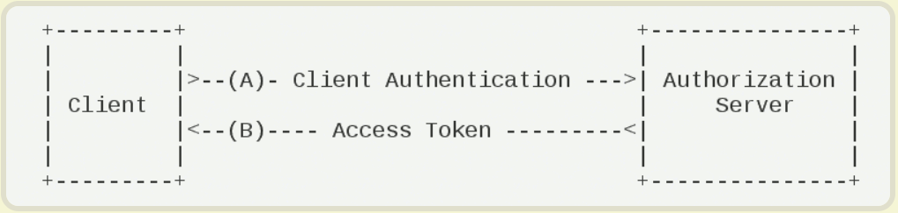

1. 引言
现在的应用开发层出不穷，基于浏览器的网页应用，基于微信的公众号、小程序，基于IOS、Android的App，基于Windows系统的桌面应用和UWP应用等等，这么多种类的应用，就给应用的开发带来的挑战，我们除了分别实现各个应用外，我们还要考虑各个应用之间的交互，通用模块的提炼，其中身份的认证和授权就是每个应用必不可少的的一部分。而现在的互联网，对于信息安全要求又十分苛刻，所以一套统一的身份认证和授权就至关重要。
IdentityServer4就是这样一个框架，IdentityServer4是为ASP.NET CORE量身定制的实现了OpenId Connect和OAuth2.0协议的认证授权中间件。
下面我们就来介绍一下相关概念，并梳理下如何集成IdentityServer4。
也可浏览自行整理的IdentityServer4 百度脑图快速了解。
2.OAuth2.0 && OpenId Connect
2.1. OpenId
OpenID 是一个以用户为中心的数字身份识别框架，它具有开放、分散性。OpenID 的创建基于这样一个概念：我们可以通过 URI （又叫 URL 或网站地址）来认证一个网站的唯一身份，同理，我们也可以通过这种方式来作为用户的身份认证。
简而言之：OpenId用于身份认证（Authentication）。
2.2. OAuth 2.0
OAuth（开放授权）是一个开放标准，目前的版本是2.0。允许用户授权第三方移动应用访问他们存储在其他服务商上存储的私密的资源（如照片，视频，联系人列表），而无需将用户名和密码提供给第三方应用。
OAuth允许用户提供一个令牌而不是用户名和密码来访问他们存放在特定服务商上的数据。每一个令牌授权一个特定的网站内访问特定的资源（例如仅仅是某一相册中的视频）。这样，OAuth可以允许用户授权第三方网站访问他们存储在另外服务提供者的某些特定信息，而非所有内容。
OAuth是OpenID的一个补充，但是完全不同的服务。
简而言之：OAuth2.0 用于授权（Authorization）。
关于OAuth2.0也可参考我的另一篇博文OAuth2.0 知多少。
2.3. OpenId Connect
OpenID Connect 1.0 是基于OAuth 2.0协议之上的简单身份层，它允许客户端根据授权服务器的认证结果最终确认终端用户的身份，以及获取基本的用户信息；它支持包括Web、移动、JavaScript在内的所有客户端类型去请求和接收终端用户信息和身份认证会话信息；它是可扩展的协议，允许你使用某些可选功能，如身份数据加密、OpenID提供商发现、会话管理等。
简而言之：OpenId Connect = OIDC = Authentication + Authorization + OAuth2.0。
比如，Facebook、Google、QQ、微博都是比较知名的OpenId Connect提供商。
3. 术语解释
了解完OpenId Connect和OAuth2.0的基本概念，我们再来梳理下涉及到的相关术语：
- User：用户
- Client：客户端
- Resources：Identity Data（身份数据）、Apis
- Identity Server：认证授权服务器
- Token：Access Token（访问令牌）和 Identity Token（身份令牌）
4. JwtBearer 认证
4.1. HTTP身份验证流程
HTTP提供了一套标准的身份验证框架：服务器可以用来针对客户端的请求发送质询(challenge)，客户端根据质询提供身份验证凭证。质询与应答的工作流程如下：服务器端向客户端返回401（Unauthorized，未授权）状态码，并在WWW-Authenticate头中添加如何进行验证的信息，其中至少包含有一种质询方式。然后客户端可以在请求中添加Authorization头进行验证，其Value为身份验证的凭证信息。
Bearer认证（也叫做令牌认证）是一种HTTP认证方案，其中包含的安全令牌的叫做Bearer Token。因此Bearer认证的核心是Token。那如何确保Token的安全是重中之重。一种方式是使用Https，另一种方式就是对Token进行加密签名。而JWT就是一种比较流行的Token编码方式。
4.2. JWT（Json Web Token)
Json web token (JWT), 是为了在网络应用环境间传递声明而执行的一种基于JSON的开放标准（RFC 7519）。该token被设计为紧凑且安全的，特别适用于分布式站点的单点登录（SSO）场景。JWT的声明一般被用来在身份提供者和服务提供者间传递被认证的用户身份信息，以便于从资源服务器获取资源，也可以增加一些额外的其它业务逻辑所必须的声明信息，该token也可直接被用于认证，也可被加密。
JWT有三部分组成：
. .
- Header：由
alg和typ组成，alg是algorithm的缩写，typ是type的缩写，指定token的类型。该部分使用Base64Url编码。 - Payload：主要用来存储信息，包含各种声明，同样该部分也由
BaseURL编码。 - Signature：签名，使用服务器端的密钥进行签名。以确保Token未被篡改。
1 | HMACSHA256( |
5. 授权模式
OAuth2.0 定义了四种授权模式：
- Implicit：简化模式；直接通过浏览器的链接跳转申请令牌。
- Client Credentials：客户端凭证模式；该方法通常用于服务器之间的通讯；该模式仅发生在Client与Identity Server之间。
- Resource Owner Password Credentials：密码模式
- Authorization Code：授权码模式；
5.1. Client Credentials

客户端凭证模式，是最简单的授权模式，因为授权的流程仅发生在Client与Identity Server之间。
该模式的适用场景为服务器与服务器之间的通信。比如对于一个电子商务网站，将订单和物流系统分拆为两个服务分别部署。订单系统需要访问物流系统进行物流信息的跟踪，物流系统需要访问订单系统的快递单号信息进行物流信息的定时刷新。而这两个系统之间服务的授权就可以通过这种模式来实现。
5.2. Resource Owner Password Credentials
Resource Owner其实就是User，所以可以直译为用户名密码模式。密码模式相较于客户端凭证模式，多了一个参与者，就是User。通过User的用户名和密码向Identity Server申请访问令牌。这种模式下要求客户端不得储存密码。但我们并不能确保客户端是否储存了密码，所以该模式仅适用于受信任的客户端。否则会发生密码泄露的危险。该模式不推荐使用。
5.3. Authorization Code
授权码模式是一种混合模式，是目前功能最完整、流程最严密的授权模式。它主要分为两大步骤：认证和授权。
其流程为：
- 用户访问客户端，客户端将用户导向Identity Server。
- 用户填写凭证信息向客户端授权，认证服务器根据客户端指定的重定向URI，并返回一个【Authorization Code】给客户端。
- 客户端根据【Authorization Code】向Identity Server申请【Access Token】
5.4. Implicit
简化模式是相对于授权码模式而言的。其不再需要【Client】的参与，所有的认证和授权都是通过浏览器来完成的。
6. IdentityServer4 集成
通过以上知识点的梳理，我们对OpenId Connect 和OAuth2.0的一些相关概念有了大致认识。而IdentityServer4是为ASP.NET CORE量身定制的实现了OpenId Connect和OAuth2.0协议的认证授权中间件。
所以自然而然我们对IdentityServer4有了基础的认识。下面就来介绍如何集成IdentityServer4。其主要分为三步：
- IdentityServer如何配置和启用IdentityServer中间件
- Resources如何配置和启用认证授权中间件
- Client如何认证和授权
6.1. Identity Server 中间件的配置和启用
作为一个独立的Identity Server，它必须知道哪些资源需要保护，必须知道哪些客户端能够允许访问，这是配置的基础。
所以IdentityServer中间件的配置的核心就是：
- 配置受保护的资源列表
- 配置允许验证的Client
1 | public class Startup |
配置完，添加IdentityServer到Pipeline即可。
如果要支持第三方登录服务或自己实现的OpenId Connect服务，则需要额外配置下身份认证中间件。
6.2. Resources的保护配置
配置完Identity Server，接下来我们该思考如何来保护Resources，以及如何将所有的认证和授权请求导流到Identity Server呢？
在此之前，我们还是要梳理下Client访问Resources的请求顺序：
- Client请求资源，资源如果需要进行身份认证和授权，则将请求导流到Identity Server。
- Identity Server根据Client配置的授权类型，返回【Token】。
- Client携带【Token】请求资源。
- 受保护的资源服务器要能够验证【Token】的正确性。
所以针对要保护的资源，我们需要以下配置：
- 指定资源是否需要保护；
- 指定IdentityServer用来进行认证和授权跳转；
- 指定Token验证；
代码示例：
1 | //使用[Authorize]特性，来显式指定受保护的资源 |
1 | public class Startup |
6.3. Client的请求配置
资源和认证服务器都配置完毕，接下来客户端就可以直接访问了。
如果针对控制台客户端应用，三步走就可以访问Api：
- 使用DiscoverClient发现Token Endpoint
- 使用TokenClient请求Access Token
- 使用HttpClient访问Api
代码示例如下：
1 | // discover endpoints from metadata |
如果针对ASP.NET Web控制台客户端，我们先来回答一个问题：
- 如果Web应用是否需要登录？
- 如果需要登录，就需要进行身份认证。
- 身份认证成功后，也就需要会话状态的维持。
回答完上面的问题，我们也就梳理出了配置要点：
- 添加身份认证中间件
- 启用Cookie进行会话保持
- 添加OIDC，使用我们自己定义的IdentityServer提供的认证服务
1 | public void ConfigureServices(IServiceCollection services) |
7. 最后
本文通过介绍IdentityServer4涉及到的术语和相关概念，再结合官方实例，梳理了集成IdentityServer4的大致思路。而关于如何与ASP.NET Identity、EF Core集成，本文并未涉及，详参官方文档。
Identity Server 官方文档
dentityServer4 中文文档与实战Bearer Authentication
JSON Web Token
理解OAuth 2.0
Identity Server 授权类型